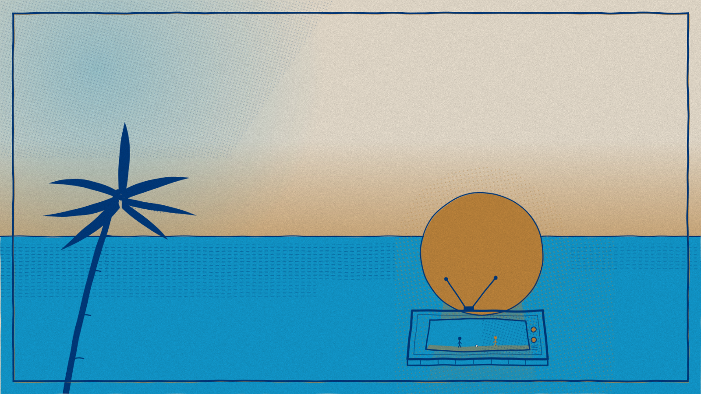
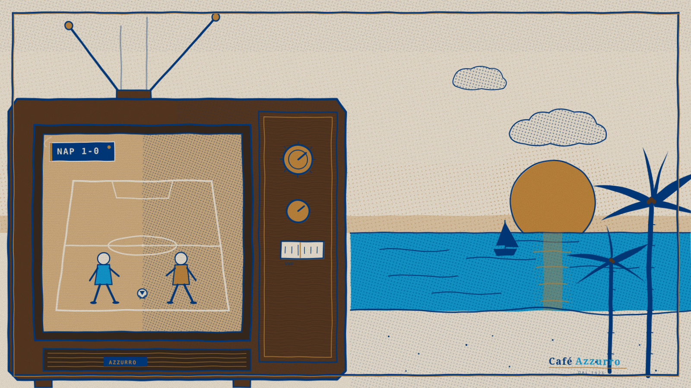
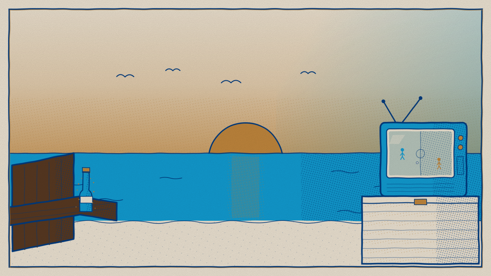
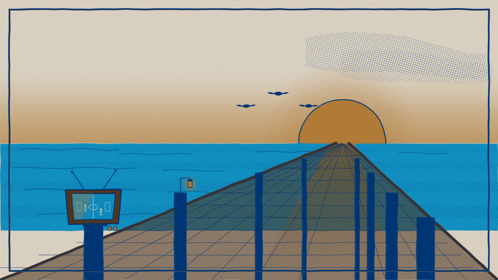
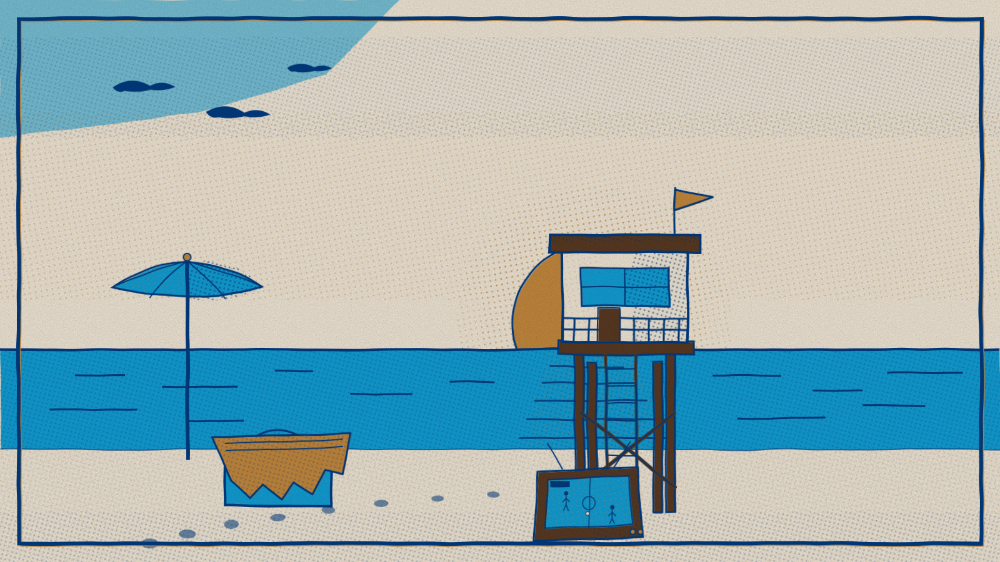
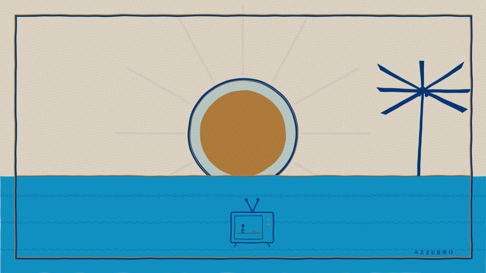

Six SVG hero variants. All inherit the moka mark's offset-litho technique: feTurbulence-displaced edges, navy/gold halftone patterns, misregistered azzurro fills, paper grain. Each variant takes a different compositional approach to St. Pete Beach + a TV with vague soccer playing.

Concept: Wide horizon at golden hour: cream paper sky tinted with gold near the waterline, an azzurro halftone bruise upper-left for atmospheric depth. Gold sun sits low-right with halftone aureole, casting a gold column down the azzurro gulf. A leaning navy palm anchors the left edge; a small chunky CRT on a striped blanket lower-right tuned to two stick footballers. Misregistered azzurro and a double-struck navy/gold frame keep the offset-litho honesty.

Concept: Chunky vintage CRT dominates the left half as a character in its own right — wood-paneled casing, rabbit-ear antennas, gold knobs, VHF tuner. Screen broadcasts the match in perspective: azzurro and gold stick figures mid-stride toward a white ball at center circle, "NAP 1-0" scoreboard glowing, scan lines drifting across. Beyond the set, the gulf opens up: gold-washed sky, halftone clouds veiling a gold sun, navy palm silhouettes, a tiny sailboat, sand pocked with grit.

Concept: First-person sunset at the gulf: viewer sunk into a navy-outlined Adirondack chair, brown slats receding left, a sweating azzurro soda bottle on the armrest with gold-droplet condensation. Lower right, a CRT TV with bent antenna perches on a ribbed Yeti-style cooler, screen showing tiny azzurro and gold stick figures chasing a white ball across a halftone pitch. Centered sun bleeds a gold reflection column across navy-stippled water. Four navy gulls cross a gold-washed sky.

Concept: Dusk at the St. Pete Pier as a misregistered risograph print. Wooden boardwalk recedes in one-point perspective to a gold sun resting on the horizon. A CRT television perches on a foreground piling broadcasting a glare-washed soccer match. Three navy pelicans cruise toward the sun in V formation. A small lantern glows on a mid-distance post; dusk clouds smudge the upper-right sky. Halftones do the heavy lifting: navy ripples on azzurro gulf, gold reflection column streaming down the pier.

Concept: A St. Pete lifeguard tower anchors the right of frame, stilts and ladder rising from cream sand into a halftone-gold sky. Gold sun sits half-eclipsed behind its cabin, scattering shimmer down a navy-rippled gulf. A CRT props at its base showing a tiny soccer match — culture meets coast. Left foreground holds an azzurro umbrella, gold-striped towel and cooler; pelicans drift upper-left; halftone footprints lead the viewer toward the tower.

Concept: A 1962 Adriatic travel poster reduced to its essentials: a hand-stamped sun built from a gold disc inside a misregistered navy ring, twelve halftone-fading rays radiating outward like a citrus-crate label, a single gold typographic hairline horizon, a flat azzurro gulf scored by three navy halftone wave strips, one angular Olivetti-style palm anchoring the right edge, and a tiny televised match centered low — antenna V, stick figure, gold ball — functioning as a typographic mark.